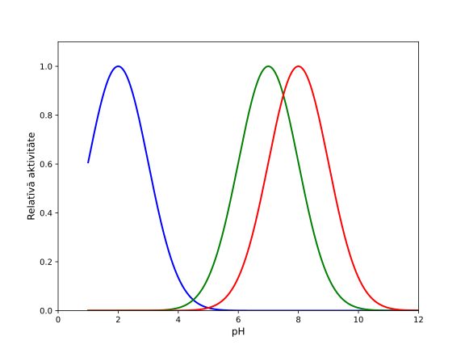

Šūnu veidi.
1. Kā atšķiras prokariotu (baktēriju un arheju) šūnas no eikariotu šūnām?
2. Kā atšķiras prokariotu DNS no eikariotu? 
3. Ko augiem nodrošina centrālā vakuola?
3. Kā hormoni kontrolē cukura līmeni asinīs?
4.Kā atšķiras cukura diabēta veidi?
5.Kā kuņģa šūnas nodrošina proteīnu gremošanu?
6. Kā hormoni kontrolē ēstgribu?
7.Kad hīms (barības putriņa) nonāk divpadsmitpirkstu zarnā, tā izdala hormonus holecistokinīnu un sekretīnu. Kurš apgalvojums pareizi raksturo to hormonālo kontroli?
8. Žults sāļi sadala taukus mazākos pilienos un lipāze sadala triglicerīdus monoglicerīdos un taukskābēs. Kurā orgānā notiek šis process?
9.Kurš no enzīmiem nepiedalās gremošanas procesā tievajā zarnā?
10. Kāda ir atgremotāju gremošanas orgānu secība?
Attēlu atsauces
- Atgremotāju shēma: vegan.lv
Epasts: biokomandas@gmail.com Instagram: @biologijas_olimpiade Facebook: facebook.com/biokomandas
Šis darbs ir licencēts saskaņā ar CC BY 4.0